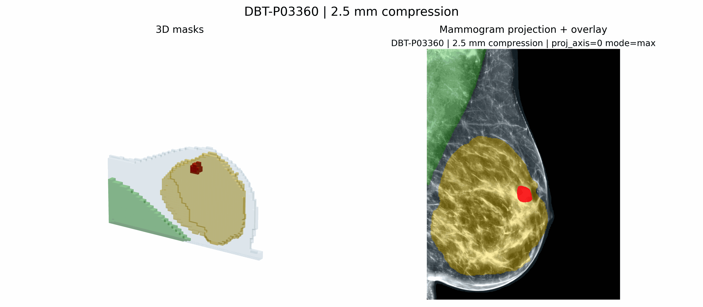
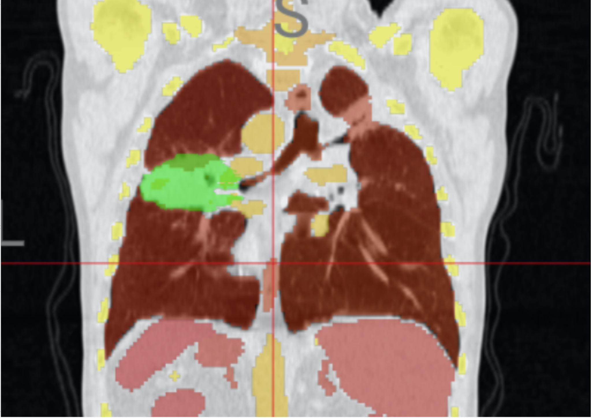
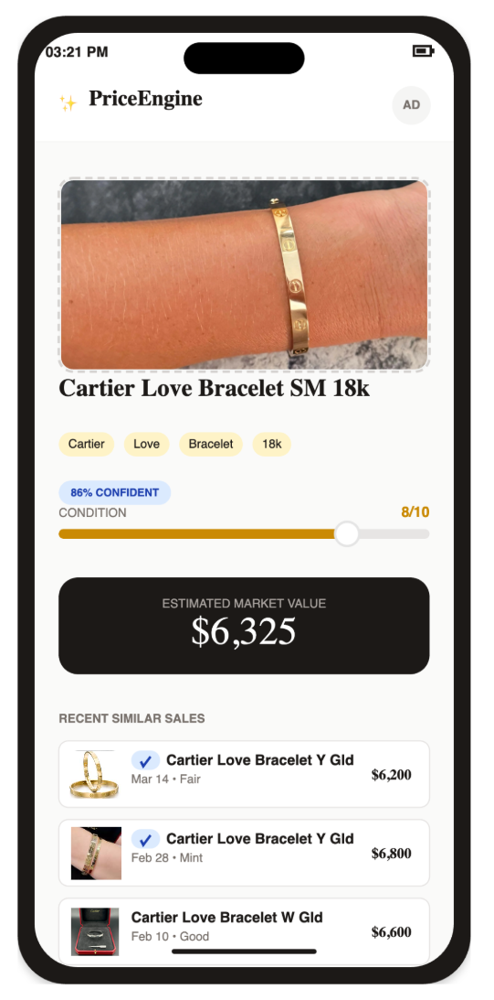
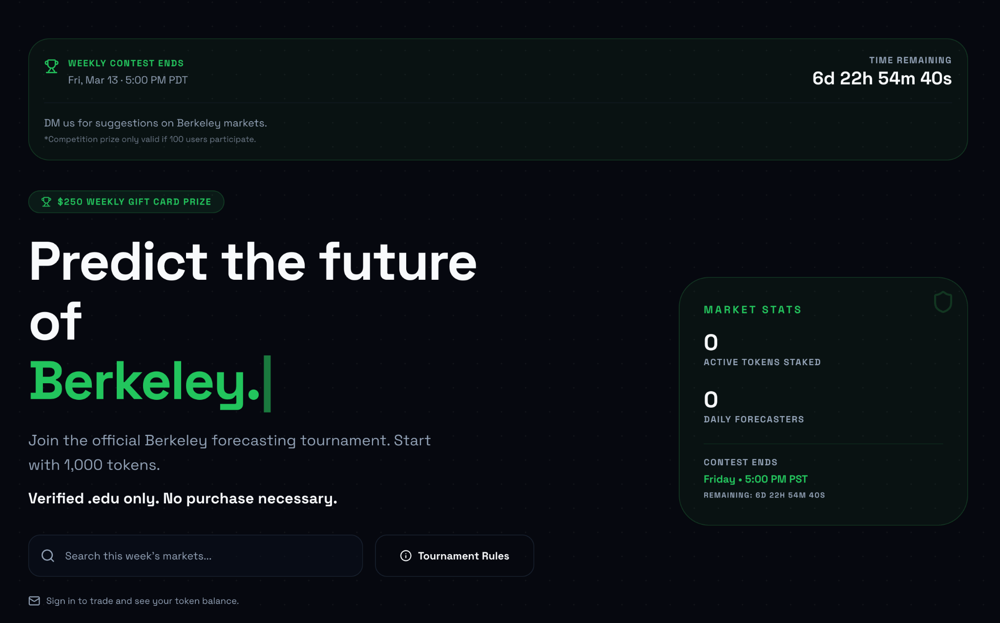
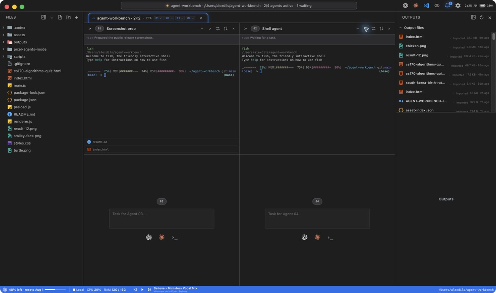
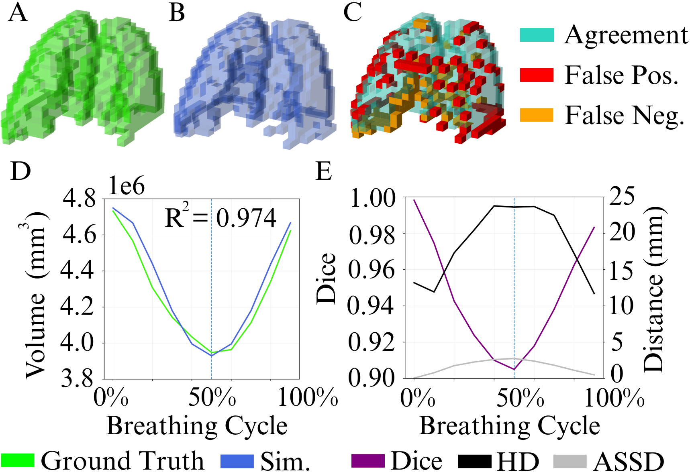
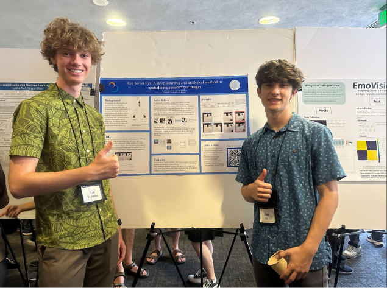
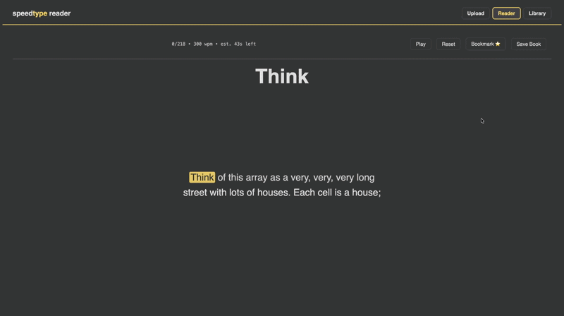

CEO & Founder, Infrastruct
Building infrastructure for teams that need cleaner internal data workflows.
infrastructs.comUC Berkeley CS / Stanford Medicine
Founder and computer vision researcher working across medical AI, biomedical data fusion, and applied ML systems.
Building infrastructure for teams that need cleaner internal data workflows.
infrastructs.comWorking in Stanford's Canary Cancer Research Education Summer Training program with the Gevaert Lab on biomedical data fusion and machine learning for cancer early detection.
Canary CREST Gevaert Lab
Canary imagingMedical AI research on skin-lesion confounders, segmentation, robustness, and physiology-informed augmentation.
Stanford CBIR
Segmentation QABuilt resale pricing workflows from product images, listing text, and comparable-sale signals. Raised $15K pre-seed.
appraiseai.co
Pricing workflowCampus prediction market for Berkeley events. Reached 100 users at launch.
calshi.app
Campus marketUndergraduate computer science student. Expected graduation: May 2029.

Developer tool
A desktop command center for running Codex, Claude, and shell agents across local and SSH workspaces.
Product page Code
Medical AI
Augmentation pipelines for medical segmentation using breathing motion and anatomical deformation.
NeurIPS submission in progress.png)

NHSJS 2025
Hybrid analytical and deep-learning method for stereoscopic image generation from one view.
Paper